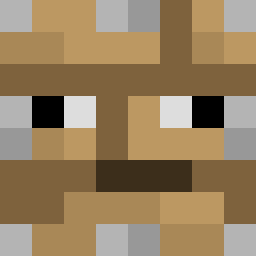

What is a Manifest?
A manifest is a file that defines your pack to Minecraft. It stores all sorts of important info about your pack. Like all other code files in your pack, it’s written in JSON.
All Manifest Generators For Minecraft RP and BP
1. PixelPoly Manifest Generator by
JustAsh0005
and
Zarkmend_ZAN
.
Visit the Generator
2. Bedrock Manifest Generator by Calimero#2948.
Visit the Generator
3. Pack Manifest Creator by
Geenium
.
Visit the Generator
4. Manifest Generator by
Hatchi
.
Visit the Generator
5. Manifest Generator by
LeGend077
[Must Use].
Visit the Generator
6. Minecraft Bedrock Manifest Generator by
KiwiHub-br
.
Visit the Generator
7. Manifest Generator by
URNR
.
Visit the Generator
8. Manifest Generator by
Alexandre97costa
.
Visit the Generator